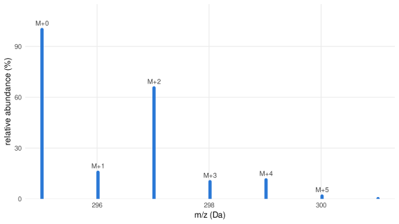
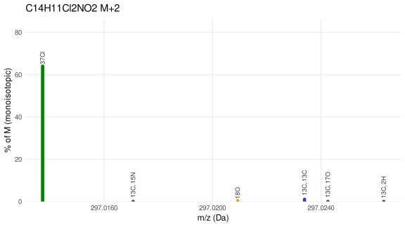
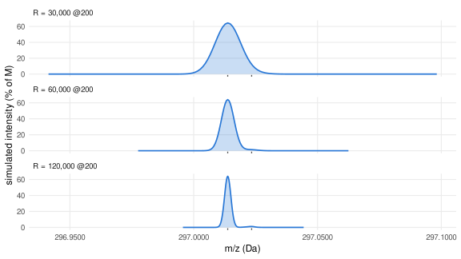

Simulating isotope fine structure for a formula
Problem: I have a candidate formula. What does its fine structure look like, and could I resolve it?
Source:vignettes/isotope-fine-structure-tool.qmd
This is the practical companion to Reading isotopic fine structure, which explains the concept using methionine as a worked example. Here the goal is a recipe you can run on any formula of your own: build the fine structure, check whether your instrument would resolve the candidates that matter, and see the simulated peak shape at your own resolving power.
Step 1 — build the fine structure
isotope_fine_pattern() wraps enviPat to enumerate every isotopologue of a formula above a threshold, labelled by which isotopes produced it. Swap in your own candidate formula here:
Show code
formula <- "C14H11Cl2NO2" # diclofenac -- replace with your own candidate
pat <- isotope_fine_pattern(formula)
pat %>% arrange(desc(abundance)) %>%
mutate(mz = round(mz, 5), abundance = round(abundance, 4),
label = ifelse(label == "", "M (monoisotopic)", label)) %>%
knitr::kable(caption = paste("Every isotopologue of", formula, "above the default 0.01% threshold."))| mz | abundance | label |
|---|---|---|
| 295.0167 | 100.0000 | M (monoisotopic) |
| 297.0137 | 63.9916 | 37Cl |
| 296.0200 | 15.1420 | 13C |
| 299.0108 | 10.2373 | 37Cl, 37Cl |
| 298.0171 | 9.6896 | 13C, 37Cl |
| 300.0141 | 1.5501 | 13C, 37Cl, 37Cl |
| 297.0234 | 1.0645 | 13C, 13C |
| 299.0204 | 0.6812 | 13C, 13C, 37Cl |
| 297.0209 | 0.4110 | 18O |
| 296.0137 | 0.3653 | 15N |
| 299.0180 | 0.2630 | 37Cl, 18O |
| 298.0108 | 0.2338 | 37Cl, 15N |
| 296.0230 | 0.1265 | 2H |
| 301.0175 | 0.1090 | 13C, 13C, 37Cl, 37Cl |
| 298.0200 | 0.0810 | 2H, 37Cl |
| 296.0209 | 0.0762 | 17O |
| 298.0243 | 0.0622 | 13C, 18O |
| 297.0171 | 0.0553 | 13C, 15N |
| 298.0179 | 0.0488 | 37Cl, 17O |
| 298.0267 | 0.0461 | 13C, 13C, 13C |
| 301.0150 | 0.0421 | 37Cl, 37Cl, 18O |
| 300.0213 | 0.0398 | 13C, 37Cl, 18O |
| 300.0078 | 0.0374 | 37Cl, 37Cl, 15N |
| 299.0141 | 0.0354 | 13C, 37Cl, 15N |
| 300.0238 | 0.0295 | 13C, 13C, 13C, 37Cl |
| 297.0263 | 0.0192 | 13C, 2H |
| 300.0171 | 0.0130 | 2H, 37Cl, 37Cl |
| 299.0234 | 0.0123 | 13C, 2H, 37Cl |
| 297.0243 | 0.0115 | 13C, 17O |
Grouping by nominal mass reproduces the coarse M/M+1/M+2 pattern any calculator would give you — diclofenac’s two chlorines make this one unambiguous even at unit resolution:
Show code
base_mz <- pat$mz[pat$label == ""]
coarse <- pat %>% mutate(nominal = round(mz - base_mz)) %>%
group_by(nominal) %>%
summarise(mz = base_mz + first(nominal), abundance = sum(abundance), .groups = "drop")
ggplot(coarse, aes(mz, abundance)) +
geom_segment(aes(xend = mz, y = 0, yend = abundance), colour = BLUE, linewidth = 2.2,
lineend = "round") +
geom_text(data = filter(coarse, abundance > 1), aes(label = paste0("M+", nominal)),
vjust = -0.6, size = 3.4, colour = "grey25") +
scale_y_continuous(limits = c(0, NA), expand = expansion(mult = c(0, .15))) +
labs(x = "m/z (Da)", y = "relative abundance (%)") +
theme_minimal(base_size = 12) +
theme(panel.grid.minor = element_blank())
Step 2 — zoom into one nominal level
Plotting the isotopologues of a single nominal level directly on the m/z axis shows what is really inside it — here M+2, where a 37Cl isotopologue dominates so completely that a small 13C,13C shoulder is almost invisible on a linear scale:
Show code
plot_level <- function(pattern, level, title) {
base <- pattern$mz[pattern$label == ""]
d <- pattern %>% mutate(nominal = round(mz - base)) %>% filter(nominal == level) %>%
mutate(element = sub(",.*", "", label), element = sub("^[0-9]+", "", element),
col = ifelse(label == "" | grepl(",", label), "combo", element),
col = ifelse(col %in% names(COL), col, "combo"))
ggplot(d, aes(mz, abundance, colour = col)) +
geom_segment(aes(xend = mz, y = 0, yend = abundance), linewidth = 2.2, lineend = "round") +
geom_text(data = slice_max(d, abundance, n = min(6, nrow(d))),
aes(label = label), angle = 90, hjust = -0.15, size = 3.1, colour = "grey20") +
scale_colour_manual(values = COL, guide = "none") +
scale_x_continuous(labels = scales::label_number(accuracy = 0.0001)) +
scale_y_continuous(limits = c(0, NA), expand = expansion(mult = c(0, .35))) +
labs(x = "m/z (Da)", y = "% of M (monoisotopic)", title = title) +
theme_minimal(base_size = 12) +
theme(panel.grid.minor = element_blank())
}
plot_level(pat, 2, paste(formula, "M+2"))
Step 3 — would your instrument resolve the candidates?
For every pair of isotopologues at a nominal level, the resolving power needed to put a valley between them is (m1+m2) / 2 / |m1-m2| at that m/z; translated to the usual Orbitrap convention (quoted at a reference m/z, typically 200), it scales as 1/sqrt(m/z):
Show code
R_at_mz <- function(mz, R_ref, mz_ref = 200) R_ref * sqrt(mz_ref / mz)
fwhm_at <- function(mz, R_ref, mz_ref = 200) mz / R_at_mz(mz, R_ref, mz_ref)
## every pairwise gap within one nominal level, and the resolving power (at the
## reference m/z used above) that would put a valley between the peaks. Faint
## candidates (< min_abundance percent) are dropped so the table stays a short,
## readable list of comparisons an analyst could actually be faced with.
separations <- function(pattern, level, R_ref = 120000, mz_ref = 200, min_abundance = 0.01) {
base <- pattern$mz[pattern$label == ""]
d <- pattern %>% mutate(nominal = round(mz - base)) %>%
filter(nominal == level, abundance >= min_abundance) %>%
mutate(label = ifelse(label == "", "M", label))
if (nrow(d) < 2) return(tibble())
ix <- combn(seq_len(nrow(d)), 2)
bind_rows(lapply(seq_len(ncol(ix)), function(i) {
ra <- d[ix[1, i], ]; rb <- d[ix[2, i], ]
sep_da <- abs(ra$mz - rb$mz)
Rreq <- (ra$mz + rb$mz) / 2 / sep_da # R needed AT that m/z
Rref_req <- Rreq / sqrt(mz_ref / mean(c(ra$mz, rb$mz))) # translated to the R_ref convention
tibble(a = ra$label, b = rb$label, abundance_a_pct = round(ra$abundance, 3),
abundance_b_pct = round(rb$abundance, 3), separation_Da = round(sep_da, 5),
R_needed_here = round(Rreq), R_needed_at200 = round(Rref_req))
})) %>% arrange(R_needed_at200)
}
sep2 <- separations(pat, 2)
sep2 %>%
knitr::kable(col.names = c("a", "b", "abundance a %", "abundance b %",
"separation (Da)", "R needed here", "R needed @200"),
caption = "Every pair of M+2 candidates above 0.01% abundance, and the resolving power (quoted at m/z 200, Orbitrap convention) that would separate them.")| a | b | abundance a % | abundance b % | separation (Da) | R needed here | R needed @200 |
|---|---|---|---|---|---|---|
| 37Cl | 13C, 2H | 63.992 | 0.019 | 0.01258 | 23607 | 28769 |
| 37Cl | 13C, 17O | 63.992 | 0.012 | 0.01052 | 28229 | 34401 |
| 37Cl | 13C, 13C | 63.992 | 1.065 | 0.00966 | 30748 | 37471 |
| 13C, 15N | 13C, 2H | 0.055 | 0.019 | 0.00924 | 32139 | 39166 |
| 37Cl | 18O | 63.992 | 0.411 | 0.00720 | 41276 | 50301 |
| 13C, 15N | 13C, 17O | 0.055 | 0.012 | 0.00718 | 41357 | 50399 |
| 13C, 15N | 13C, 13C | 0.055 | 1.065 | 0.00632 | 46998 | 57274 |
| 18O | 13C, 2H | 0.411 | 0.019 | 0.00539 | 55149 | 67208 |
| 13C, 15N | 18O | 0.055 | 0.411 | 0.00386 | 77028 | 93870 |
| 37Cl | 13C, 15N | 63.992 | 0.055 | 0.00334 | 88929 | 108372 |
| 18O | 13C, 17O | 0.411 | 0.012 | 0.00333 | 89305 | 108832 |
| 13C, 13C | 13C, 2H | 1.065 | 0.019 | 0.00292 | 101654 | 123882 |
| 18O | 13C, 13C | 0.411 | 1.065 | 0.00246 | 120550 | 146908 |
| 13C, 17O | 13C, 2H | 0.012 | 0.019 | 0.00206 | 144196 | 175726 |
| 13C, 13C | 13C, 17O | 1.065 | 0.012 | 0.00086 | 344559 | 419899 |
Show code
top <- sep2 %>% filter(a == "37Cl" | b == "37Cl") %>% slice_min(R_needed_at200, n = 1)
cat(sprintf("`37Cl` needs only R ~ %s at m/z 200 to separate from its closest competitor (`%s`) -- trivially available on any current Orbitrap.",
format(top$R_needed_at200, big.mark = ","), ifelse(top$a == "37Cl", top$b, top$a)))37Cl needs only R ~ 28,769 at m/z 200 to separate from its closest competitor (13C, 2H) – trivially available on any current Orbitrap.
Step 4 — simulate the profile at your own resolving power
Numbers on a table are one thing; seeing whether two peaks actually merge is more convincing. isotope_profile() sums a Gaussian peak of the right width for each candidate — pass it the actual resolving power at this m/z, converting from an Orbitrap’s R_ref @ 200 setting with R_at_mz() first:
Show code
Rs <- c(30000, 60000, 120000)
R_label <- function(r) sprintf("R = %s @200", format(r, big.mark = ",", trim = TRUE))
pat2 <- pat %>% mutate(nominal = round(mz - base_mz)) %>% filter(nominal == 2)
prof <- bind_rows(lapply(Rs, function(r)
isotope_profile(pat2, resolution = R_at_mz(mean(pat2$mz), r)) %>%
mutate(R = R_label(r))))
ticks <- pat2 %>% filter(abundance > 0.5)
ggplot(prof, aes(mz, intensity)) +
geom_area(fill = BLUE, alpha = .25) +
geom_line(colour = BLUE, linewidth = .8) +
geom_rug(data = ticks, aes(x = mz), inherit.aes = FALSE, sides = "b", colour = "grey30", linewidth = .6) +
facet_wrap(~ factor(R, levels = vapply(Rs, R_label, "")), ncol = 1, scales = "free_y") +
scale_x_continuous(labels = scales::label_number(accuracy = 0.0001)) +
labs(x = "m/z (Da)", y = "simulated intensity (% of M)") +
theme_minimal(base_size = 12) +
theme(panel.grid.minor = element_blank(), strip.text = element_text(hjust = 0))
Even at the lowest of these three resolving powers the two chlorines are already visually obvious as a separate hump — consistent with the table above, and the kind of case where fine structure confirms what the coarse pattern already showed rather than revealing something it hid. For a case where fine structure genuinely changes the conclusion, see methionine’s hidden sulfur in Reading isotopic fine structure.
Checklist
-
Build the pattern with
isotope_fine_pattern(formula)and check the coarse sum (group_bynominal mass) against what carbon count alone predicts (nC * 1.07%for M+1;choose(nC,2) * 0.0107^2 * 100%for M+2). A large excess is the first signal that something heavier than carbon is present. - Zoom into the nominal level that shows the excess to see which specific isotopologues could produce it, and how far apart they sit in exact mass — in Da, directly comparable to your spectrum’s own axis.
-
Check the gap against your resolving power with
separations()before concluding a peak is “clean” — a shoulder that should be there but isn’t resolved is not evidence it’s absent, only evidence you didn’t have the resolving power to see it. -
Simulate the profile with
isotope_profile()at your instrument’s actual resolving power (converted from itsR @ reference m/zspec withR_at_mz()) to see, rather than infer, whether the candidates would merge.
None of plot_level() or separations() are exported by commonMZ; only isotope_fine_pattern() and isotope_profile() are. The two helpers above are short enough to copy into your own analysis — that’s the point of showing their full source here.